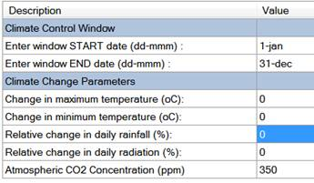
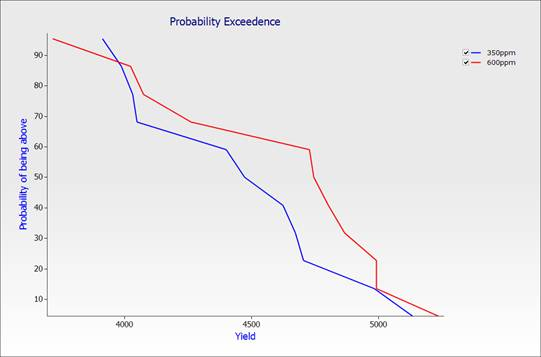
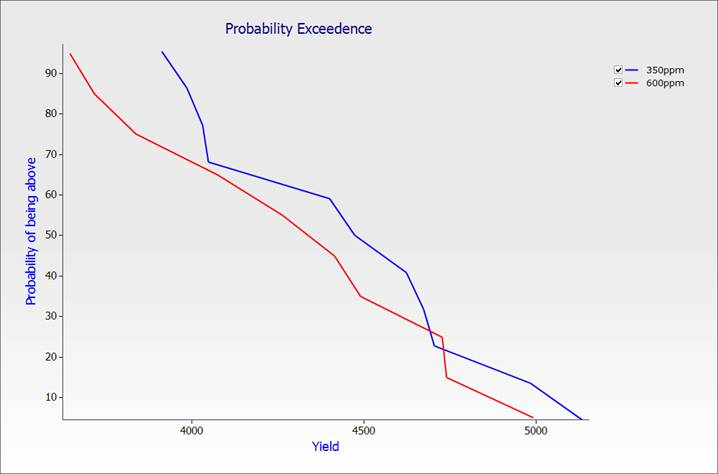

Climate Change Projections in APSIM
This exercise aims to explore the effects of climate change on wheat cropping systems. Some background is in this PDF. Firstly, the response of wheat to elevated CO2 is examined. Please be aware that as of version 7.4 only wheat, oats and barley are responsive to CO2 changes. All other crops will generate an error.
1. Create a new simulation using “Continuous Wheat with Climate Change” as a base. Save it as “Climate.apsim”.
2. Change the start date to 1/1/1970. This will give us a 20 year run.
3. Add a “Reset water, nitrogen and surfaceOM on fixed date” rule and set the date to 1-jan. Don’t forget to set the soil and surfaceOM modules as well.
4. Rename the simulation as 350ppm and click on the ClimateControl module.

Here you will find the settings that control how the climate can be varied. We’ll look at changes to CO2 and rainfall.
5. Create a linked simulation (see module 4), rename it to 600ppm then unlink the ClimateControl module and change the CO2 concentration to 600 ppm. Change both temperature deltas to 2 and change in rainfall to -10.
6. Run and graph the simulations using a Probability Exceedence chart. You can see that the elevated levels of CO2 along with the increase in temperature offset the drop in rainfall and end up increasing the grain yield.

The Big Picture
When modelling, you need to remember that the data you get out of your model is only as good as the data you put into it. The above graph shows that yields will increase as the climate gets hotter, but it doesn’t reflect water usage properly. Remember that we’re using a full water profile on a soil that has a high water holding capacity and we’re resetting that each year. Even though we’ve reduced rainfall by 10% to reflect drier conditions we still end up with high yields. This is because the crop is using all the stored water so the smaller amount of rainfall has no effect on yields.
If we’re reducing rainfall and we expect more drought conditions because of it, it is unlikely that we’re going to end up with a full profile at sowing. Let’s see what happens if we assume that the profile is only 30% full due to drought.
1. In the 600ppm simulation, unlink the ‘Initial water’ node and change the profile to 30% full.
2. Run and graph using a Probability Exceedence chart.

We now have a lower yield since the crop is water limited. When doing simulations always ensure that everything makes logical sense. So in this case, since we were reducing rainfall and expecting more droughts, it makes sense that our initial soil water would be lower.